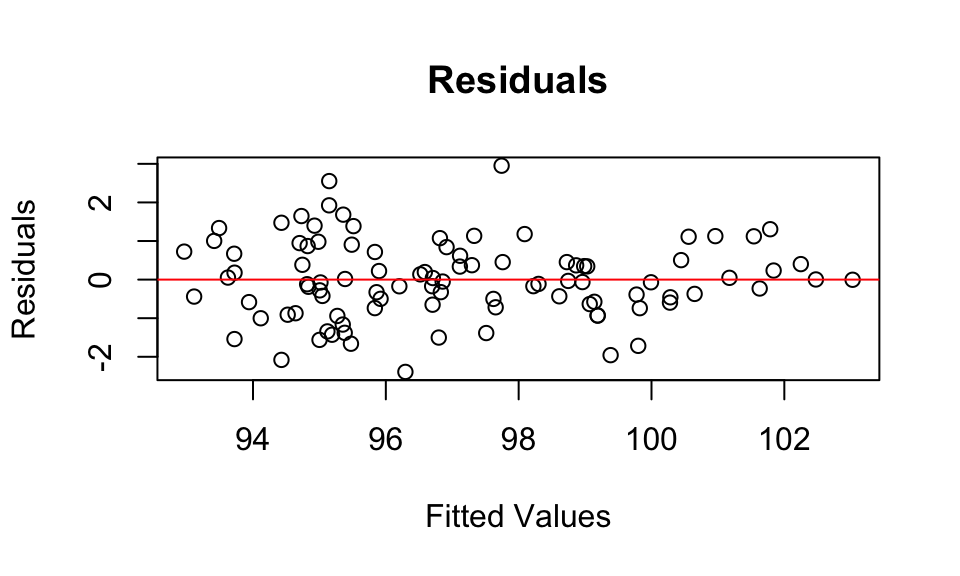

# Dies ist ein Kommentar
# Packages installieren install.packages('tidyverse')
# install.packages('rempsyc') install.packages('haven') install.packages('car')
# install.packages('effectsize') install.packages('psych')
# install.packages('GGally')
# Packages laden
library(tidyverse) # All-around package
library(rempsyc) # Convenience-functions für Psychologie
library(haven) # SPSS-Files (.sav) einlesen
library(car) # Anova
library(effectsize) # Effektstärkten
library(psych) # All-around package für Statistik
library(GGally) # KorrelationsmatrixStatistik Leitfaden R
Einführung
Installation & Laden von Packages
Im ersten Schritt installieren und laden wir Packages. Diese enthalten Funktionen, welche wir später nutzen werden. Wenn man ein Package, zum Beispiel das Package tidyverse, zum ersten Mal verwendet, muss man es mit der Funktion install.packages("tidyverse") installieren. Anschließen kann man es mit der Funktion library(tidyverse) laden.
Um die Packages im Folgenden Code zu installieren, entferne das # um den Kommentar #install.packages("tidyverse") zu einer Zeile Code zu verwandeln.
Grundlegende Operatoren
Mit dem assignment operator <- kann man Variablen erstellen. Den Inhalt der Variable kann man ganz einfach einsehen, indem man den Namen der Variable in der Konsole / im Skript ausführt. Alternativ kann man die Funktion print() am jeweiligen Objekt verwenden. Die Funktion c() wird verwendet wenn wir einzelne Objekte zu einem Vektor zu kombinieren. Dies bietet viele Möglichkeiten, z.B. wenn wir mehrere Zeilen oder Spalten aus einer Daten-Tabelle (“Dataframe”) verwenden wollen df[c("Reihe_1", "Reihe_2"), c("Spalte_1", "Spalte_2")].
x <- 10 # oder x = 10
x[1] 10text_y <- "Hello"
text_z <- "WORLD"
# Print: um ein Objekt zu 'drucken'
print(text_y)[1] "Hello"text_y_z <- c(text_y, text_z)
text_y_z[1] "Hello" "WORLD"Der “Pipe-Operator” %>% aus dem tidyverse-Package wird verwendet, um eine Funktion an einem Objekt anzuwenden, ohne das Objekt in der Funktion stehen zu haben. Obwohl das nichts am Output verändert, nutzen wir ihn, um eine Struktur im Code zu behalten. Dies ist speziell dann wichtig, wenn man mehrere Funktionen nacheinander anwendet.
Wenn wir beispielsweise eine Tabelle von Autos mtcars 1. nach der Variable mpg (miles per gallon) filtern wollen, 2. bestimmte Variablen auswählen wollen und 3. die Autos dann nach der Leistung (hp) ordnen wollen, brauchen wir nicht zwangsläufig 3 Zeilen Code dafür. Beide Herangehensweisen kommen zum selben Ergebnis
# 1. Normal
cars_filtered <- filter(mtcars, mpg > 20)
cars_selected <- select(cars_filtered, mpg, cyl, hp)
cars_final <- arrange(cars_selected, desc(hp))
# 2. Mit Pipe %>%
cars_final <- mtcars %>%
filter(, mpg > 20) %>%
select(, mpg, cyl, hp) %>%
arrange(, desc(hp))
# Die ersten 3 Reihen anzeigen
head(cars_final, 3) mpg cyl hp
Lotus Europa 30.4 4 113
Mazda RX4 21.0 6 110
Mazda RX4 Wag 21.0 6 110Mathematische Operatoren
Man kann einfache Berechnungen mit Zahlen oder Vektoren durchführen. Mit eckigen Klammern kann man Positionen in einem Vektor auswählen / einsehen.
x^2[1] 100# Vector erstellen
vec_1 <- c(5, 10, 15)
vec_1[1] 5 10 15vec_1[1][1] 5vec_1[2][1] 10vec_1[3][1] 15vec_1 * 2[1] 10 20 30| Operation | Zeichen |
|---|---|
| Addition | + |
| Multiplikation | * |
| Division | / |
| Potenz | ^ |
Files einlesen
Um ein File einzulesen, müssen wir den Pfad des Files angeben. Befinden sich das Skript und File im selben Ordner, genügt für das csv-File “data_1.csv” der Pfad ".//data_1.csv".
# CSV-Datei einlesen
data <- read_csv(".//data_1.csv")Um SPSS Files mit dem Typ .sav einzulesen, kann man folgende Funktion aus dem haven-Package verwenden:
# SAV-Datei einlesen
data_2 <- read_sav(".//data_2.sav")Überblick verschaffen
Um sich einen Überblick über ein Datenfile zu verschaffen, eignen sich die folgenden Funktionen. Hinweis: $ wird verwendet, um eine Spalte auszuwählen.
# Ersten fünf Zeilen
head(data, 5)# A tibble: 5 × 15
Alter Bildungsstand Rauchen gender Herkunftsland Mathematiknote Statistiknote
<dbl> <dbl> <chr> <dbl> <dbl> <dbl> <dbl>
1 25 4 Nein 1 1 1 1
2 28 5 Nein 1 1 1 2
3 29 2 Ja 2 2 3 NA
4 23 4 Nein 1 1 4 5
5 25 5 Nein 1 2 5 4
# ℹ 8 more variables: Allgemeinwissen <dbl>, Extraversion <dbl>,
# Neurotizismus <dbl>, Offenheit <dbl>, Gewissenhaftigkeit <dbl>,
# Verträglichkeit <dbl>, IQ <dbl>, BDI <dbl>colnames(data) [1] "Alter" "Bildungsstand" "Rauchen"
[4] "gender" "Herkunftsland" "Mathematiknote"
[7] "Statistiknote" "Allgemeinwissen" "Extraversion"
[10] "Neurotizismus" "Offenheit" "Gewissenhaftigkeit"
[13] "Verträglichkeit" "IQ" "BDI" summary(data$IQ) Min. 1st Qu. Median Mean 3rd Qu. Max.
64.00 91.00 100.50 99.98 109.25 144.00 table(data$Rauchen)
Ja Keine Angabe Nein
24 2 74 Variablen Transformation
Variablen umbennen / umkodieren
# Variable umbenennen: Geschlecht ist der neue Name, gender der alte Name
data <- data %>%
rename(Geschlecht = gender)
# Variable transformieren: zu einem Faktor, d.h. Nominalskalenniveau
data$Bildungsstand <- data$Bildungsstand %>%
as_factor()
# Keine Angabe in Variable 'Rauchen' wird zu NA
data$Rauchen[data$Rauchen == "Keine Angabe"] <- NAz-Standardisierung
mutate() wird häufig verwendet, um Variablen zu transformieren. Um eine z-standardisierte Variable (hier: BDI_z) aus der herkömmlichen Variable (hier: BDI) zu erstellen, nutzen wir scale().
data <- data %>%
mutate(BDI_z = scale(BDI))Deskriptive Statistik
Wir können ganz einfach den Mittelwert und die Standardabweichung von einer Spalte berechnen.
mean(data$Gewissenhaftigkeit)[1] 29.99sd(data$Gewissenhaftigkeit)[1] 10.04384Um uns deskr. Statistiken pro Gruppe ausgeben zu lassen, müssen wir group_by() verwenden.
descriptives <- data %>%
group_by(Rauchen) %>%
summarize(M = mean(Gewissenhaftigkeit), SD = sd(Gewissenhaftigkeit), n = n(),
)
descriptives# A tibble: 3 × 4
Rauchen M SD n
<chr> <dbl> <dbl> <int>
1 Ja 30.1 11.2 24
2 Nein 29.6 9.53 74
3 <NA> 42 12.7 2Statistische Verfahren
Die meisten Funktionen statistischer Verfahren sind folgendermaßen aufgebaut:
verfahren(Abhängige_Variable ~ Unabhängige_Variable, data = Datensatz).verfahren(Variable_A, Variable_B).
t-Test
t-Test über einen Mittelwert:
\(H_0:\) Der IQ beträgt in der Population im Durchschnitt einen Wert von 100.
t.test(data$IQ, mu = 100)
One Sample t-test
data: data$IQ
t = -0.0133, df = 99, p-value = 0.9894
alternative hypothesis: true mean is not equal to 100
95 percent confidence interval:
96.99627 102.96373
sample estimates:
mean of x
99.98 t-Test über zwei unabhängige Stichproben:
\(H_0:\) RaucherInnen und nicht-RaucherInnen unterscheiden sich nicht in der Gewissenhaftigkeit.
t.test(Gewissenhaftigkeit ~ Rauchen, data = data)
Welch Two Sample t-test
data: Gewissenhaftigkeit by Rauchen
t = 0.1762, df = 34.441, p-value = 0.8612
alternative hypothesis: true difference in means between group Ja and group Nein is not equal to 0
95 percent confidence interval:
-4.718766 5.615162
sample estimates:
mean in group Ja mean in group Nein
30.08333 29.63514 t-Test über zwei abhängige Stichproben:
t.test(data$Statistiknote, data$Mathematiknote, paired = TRUE)
Paired t-test
data: data$Statistiknote and data$Mathematiknote
t = 0, df = 74, p-value = 1
alternative hypothesis: true mean difference is not equal to 0
95 percent confidence interval:
-0.3608253 0.3608253
sample estimates:
mean difference
0 Varianzanalyse (ANOVA)
Einfaktorielle Varianzanalyse
# Hier filtern wir zu erst nur nach Fällen der Level 3, 4 und 5
data_filtered <- data %>%
filter(Bildungsstand %in% c(3, 4, 5))
# Wie viele Personen pro Gruppe?
table(data_filtered$Bildungsstand)
1 2 3 4 5
0 0 15 37 38 anova_result <- aov(Allgemeinwissen ~ Bildungsstand, data = data_filtered)
summary(anova_result) Df Sum Sq Mean Sq F value Pr(>F)
Bildungsstand 2 1269 634.5 2.61 0.0793 .
Residuals 87 21151 243.1
---
Signif. codes: 0 '***' 0.001 '**' 0.01 '*' 0.05 '.' 0.1 ' ' 1Zweifaktorielle Varianzanalyse (Between)
data_wor <- read_delim("Worry143.csv", delim = ";")
data_wor <- data_wor %>%
rename(gender = "Geslacht")
data_wor$gender <- data_wor$gender %>%
as_factor()
data_wor$S_E <- data_wor$S_E %>%
as_factor()Wenn wir mehrere Faktoren haben und uns potentielle Interaktionen interessieren, müssen wir die Syntax AV ~ UV1 * UV2 verwenden. Wenn uns lediglich die Haupteffekte interessieren, können wir alternativ AV ~ UV1 + UV2 verwenden.
anova_result <- aov(Wor ~ gender * S_E, data = data_wor)
summary(anova_result) Df Sum Sq Mean Sq F value Pr(>F)
gender 1 0.01 0.007 0.019 0.892
S_E 2 18.02 9.009 22.497 2.6e-09 ***
gender:S_E 2 0.74 0.368 0.919 0.401
Residuals 156 62.47 0.400
---
Signif. codes: 0 '***' 0.001 '**' 0.01 '*' 0.05 '.' 0.1 ' ' 1Zweifaktorielle Varianzanalyse (Within)
Spezialfall: Unbalanciertes Design
Hinweis: die Funktion aov() kann bei stark unbalancierten Designs (= nicht gleich viele Personen pro Gruppe) Probleme haben. Dies ist besonders relevant, wenn man mehrere Faktoren und ggf. Interaktionen untersuchen möchchte. In diesem Fall sollte die Funktion Anova(, type = 3) um die bestehende ANOVA Funktion angewandt werden. In diesem Fall können wir uns das Ergebnis ohne summary() anzeigen lassen.
Im Folgenden ist die Anwendung jedoch im balancierten Design:
anova_type_3 <- Anova(aov(Wor ~ gender * S_E, data = data_wor), type = 3)
anova_type_3Anova Table (Type III tests)
Response: Wor
Sum Sq Df F value Pr(>F)
(Intercept) 356.64 1 890.6101 < 2.2e-16 ***
gender 0.19 1 0.4689 0.4945166
S_E 6.45 2 8.0575 0.0004676 ***
gender:S_E 0.74 2 0.9191 0.4010073
Residuals 62.47 156
---
Signif. codes: 0 '***' 0.001 '**' 0.01 '*' 0.05 '.' 0.1 ' ' 1Effektgrößen ANOVA
Das partielle Eta-Quadrat \(\hat \eta^2\) können wir aus den Ergebnissen der gerechneten Varianzanalyse berechnen. Hierfür können wir die eta_squared()-Funktion aus dem Package effectsize verwenden. Diese berechnet zusätzlich ein 95%-iges Konfidenzintervall. Mit dem Parameter partial = TRUE, bzw. generalized = TRUE können wir uns speziell für das partielle oder generalisierte Eta-Quadrat entscheiden.
effectsize::eta_squared(anova_result)# Effect Size for ANOVA (Type I)
Parameter | Eta2 (partial) | 95% CI
------------------------------------------
gender | 1.19e-04 | [0.00, 1.00]
S_E | 0.22 | [0.13, 1.00]
gender:S_E | 0.01 | [0.00, 1.00]
- One-sided CIs: upper bound fixed at [1.00].Das Omega-Quadrat \(\hat \omega^2\) ist eine korrigierte Alternative zum Eta-Quadrat. Das partielle Eta-Quadrat ist positiv gebiased: unsystematische Zufallsvarianz wird zum Teil für systematische Effektvarianz gehalten. Daher wird das pertielle Omega-Quadrat korrigiert und fällt idR. kleiner aus als das partielle Eta-Quadrat. Wenn es leicht negativ ausfällt, ist es auf 0.00 zu setzen.
omega_squared(anova_result)# Effect Size for ANOVA (Type III)
Parameter | Omega2 (partial) | 95% CI
--------------------------------------------
gender | 0.00 | [0.00, 1.00]
S_E | 0.08 | [0.02, 1.00]
gender:S_E | 0.00 | [0.00, 1.00]
- One-sided CIs: upper bound fixed at [1.00].Voraussetzungen ANOVA
Homoskedastizität (Varianzhomogenität)
Tip
Homoskedastizität ist die eine zentrale Annahme in der ANOVA: die Varianzen in den Gruppen sind gleich, bzw. ähnlich groß (“homogen”). Eine Verletzung der Homoskedastizität ist schwerwiegender wenn die Gruppen unterschiedlich groß sind.
Residual Plot
Um die Homoskedastizität zu überprüfen, erstellen wir einen Residual Plot. Die Residuen bezeichnen Abweichungen eines beobachteten Wertes vom vorhergesagten Wert. In der ANOVA ist das die Abweichung eines Wert \(y_{ij}\) vom jeweiligen Gruppenmittelwert \(\hat y_j\). Daher: \(e_{ij} = y_{ij} - \hat y_j\)
Wir wollen, dass die Residuen in allen Gruppen ähnlich groß sind. Zudem zeigt der Residual Plot potentielle Ausreißer.
# Extract residuals and fitted values
residuals <- residuals(anova_result)
fitted_values <- fitted(anova_result)
# Plot residuals against fitted values
plot(jitter(fitted_values), residuals, xlab = "Fitted Values", ylab = "Residuals",
main = "Residuals of Sub-Groups")
abline(h = 0, col = "red")Levene’s Test
Alternativ können wir den Levene’s Test verwenden. Dieser testet die \(H_0\), dass die Varianzen der Gruppen homogen sind. Ein signifikanter Wert deutet darauf hin, dass die Varianzen heterogen sind, also eine Verletzung der Annahme der Homoskedastizität.
leveneTest(Wor ~ gender * S_E, data = data_wor)Levene's Test for Homogeneity of Variance (center = median)
Df F value Pr(>F)
group 5 3.6046 0.004105 **
156
---
Signif. codes: 0 '***' 0.001 '**' 0.01 '*' 0.05 '.' 0.1 ' ' 1Spherizität
Normalverteilung
Tip
Die ANOVA ist einigermaßen robust gegen eine Verletzung der Normalverteilung, es sei denn die Normalverteilung ist in der Population sehr schief oder Gruppengrößen sind unterschiedlich groß.
Um zu überprüfen, ob unsere Stichprobe normalverteilt ist, sollten wir uns als erstes ein Histogram unserer Daten anschauen.
# Wir haben die Residuen zuvor extrahiert: residuals <- residuals(anova_result)
data_wor$residual <- residuals
hist(data_wor$residual)Mit dem Grafik-Package GGPlot haben wir mehr Gestaltungsmöglichkeiten:
ggplot(data = data_wor, mapping = aes(x = residual)) + geom_histogram(bins = 20,
color = "black", fill = "steelblue") # +# facet_wrap(~S_E) + # ein eigenes Histogram pro Gruppe
labs(title = "Histogram", x = "Residuen", y = "Häufigkeit")$x
[1] "Residuen"
$y
[1] "Häufigkeit"
$title
[1] "Histogram"
attr(,"class")
[1] "labels"QQ-Plot
Die Normalverteilung können wir mit QQ-Plots testen. Im QQ-Plots wird die Verteilung der Stichprobe oder der Residuen der Stichprobe (durch Punkte gekennzeichnet) mit der Normalverteilung (Strich) verglichen.
# Wir haben die Residuen zuvor extrahiert: residuals <- residuals(anova_result)
data_wor$residual <- residuals
qqnorm(data_wor$residual, main = "QQ-Plot")
qqline(data_wor$residual)
Alternativ hat das Package Rempsyc eine praktische Funktion für QQ-Plots:
# nice_qq(data_wor, variable = 'residual')Unabhängigkeit …
Ausreißer
Korrelation
Mittels cor() können wir den Korrelationskoeffizienten berechnen. Im Parameter use können wir angeben, wie wir mit fehlenden Werten (NA) umgehen wollen.
cor(data$Mathematiknote, data$Statistiknote, use = "complete.obs")[1] 0.3961497Mit cor.test() können wir auf Signifikanz testen. Zudem wird automatisch ein 95%-Konfidenzintervall ausgegeben
cor.test(data$Extraversion, data$Neurotizismus)
Pearson's product-moment correlation
data: data$Extraversion and data$Neurotizismus
t = -4.2578, df = 98, p-value = 4.738e-05
alternative hypothesis: true correlation is not equal to 0
95 percent confidence interval:
-0.5489247 -0.2154050
sample estimates:
cor
-0.3951064 cor_ex_neu <- cor.test(data$Extraversion, data$Neurotizismus, use = "complete.obs",
method = "pearson")
r_value <- cor_ex_neu$estimate # Pearson-Korrelation (r)
p_value <- cor_ex_neu$p.value # p-value
ci_lower <- cor_ex_neu$conf.int[1] # Untere Grenze des 95% KI
ci_upper <- cor_ex_neu$conf.int[2] # Obere Grenze des 95% KI
print(paste0("Extravertierte Personen weisen geringeren Neurotizismus auf, r = ",
round(r_value, 2), ", 95% KI [", round(ci_lower, 2), ", ", round(ci_upper, 2),
"]", "."))[1] "Extravertierte Personen weisen geringeren Neurotizismus auf, r = -0.4, 95% KI [-0.55, -0.22]."Rangkorrelation
Im Parameter method können wir ebenfalls die Spearman-Korrelation und Kendall’s Tau auswählen, welche Rang-basiert sind.
cor.test(data$Mathematiknote, data$Statistiknote, method = "spearman")
Spearman's rank correlation rho
data: data$Mathematiknote and data$Statistiknote
S = 41643, p-value = 0.0002834
alternative hypothesis: true rho is not equal to 0
sample estimates:
rho
0.4076423 cor.test(data$Mathematiknote, data$Statistiknote, method = "kendall")
Kendall's rank correlation tau
data: data$Mathematiknote and data$Statistiknote
z = 3.6228, p-value = 0.0002914
alternative hypothesis: true tau is not equal to 0
sample estimates:
tau
0.3400417 Korrelationsmatrix
Es gibt verschiedene Möglichkeiten, eine Korrelations-Matrix oder Scatterplot-Matrix erstellen zu lassen:
- Die
cor()-Funktion mit mehreren Spalten eines Dataframes.
cor(data[, c("IQ", "Mathematiknote", "Allgemeinwissen")], method = "pearson", use = "pairwise.complete.obs") IQ Mathematiknote Allgemeinwissen
IQ 1.0000000 -0.3123390 0.1796224
Mathematiknote -0.3123390 1.0000000 -0.1920649
Allgemeinwissen 0.1796224 -0.1920649 1.0000000ggpairs()aus demGGally-Package.
Hier können wir uns eine Hälfte der Matrix als Scatterplot Matrix ausgeben lassen (unter lower). Die method gibt hier an, ob die Regressionslinie gerade sein soll (method = "lm") oder eine “lokale”, daher nicht-gerade Regressionslinie (method = "loess"). Letzteres ist sinnvoll, um die Voraussetzung der Linearität überprüfen will. Zusätzlich kann man sich den Standardfehler der Regressionslinie angeben lassen (se = TRUE).
ggpairs(data, columns = c("IQ", "Mathematiknote", "Allgemeinwissen"), lower = list(continuous = wrap("smooth",
method = "loess", se = TRUE)), upper = list(continuous = wrap("cor")))- Das
psych()-Package bietet eine ähnliche Funktion.
pairs.panels(data[, c("IQ", "Mathematiknote", "Allgemeinwissen")], ellipses = F)
Einfache Lineare Regression
Die Syntax der Einfachen Linearen Regression ist im selben Schema wie zuvor: AV ~ UV. Über Summary können wir uns wieder die Ergebnisse ausgeben lassen.
Der Beta-Koeffizient von Mathematiknote ist unter Estimate zu finden. Daneben den zugehörigen Standardfehler, t-Wert und zugehörigen p-Wert. Das Multiple R-squared entspricht dem \(R^2\), der gesamten durch das Modell aufgeklärten Varianz.
model_simple_regression <- lm(Allgemeinwissen ~ IQ, data = data)
summary(model_simple_regression)
Call:
lm(formula = Allgemeinwissen ~ IQ, data = data)
Residuals:
Min 1Q Median 3Q Max
-36.422 -9.111 -0.354 11.430 38.923
Coefficients:
Estimate Std. Error t value Pr(>|t|)
(Intercept) 29.7954 10.7429 2.774 0.00664 **
IQ 0.1921 0.1063 1.808 0.07374 .
---
Signif. codes: 0 '***' 0.001 '**' 0.01 '*' 0.05 '.' 0.1 ' ' 1
Residual standard error: 15.9 on 98 degrees of freedom
Multiple R-squared: 0.03226, Adjusted R-squared: 0.02239
F-statistic: 3.267 on 1 and 98 DF, p-value: 0.07374(Insert Zusammenhang \(\beta\) und \(R^2\) in SLR)
Das Package rempsyc bietet nützliche Funktionen, um Ergebnis-Tabellen zu erstellen. Diese sind zum Großteil APA-konform. Es ist jedoch ratsam, das Format noch einmal auf Richtigkeit zu überprüfen.
model_slr_results <- nice_lm(model_simple_regression)
nice_table(model_slr_results, title = c("Tabelle 1", "Zusammenhang von Allgemeinwissen und Intelligenz"),
note = c(paste("Diese Tablle ist als Beispiel gedacht. Alle Zusammenhänge sind frei erfunden.",
sep = " "), "* p < .05, ** p < .01, *** p < .001"))Tabelle 1 | |||||||
|---|---|---|---|---|---|---|---|
Zusammenhang von Allgemeinwissen und Intelligenz | |||||||
Dependent Variable | Predictor | df | b | t | p | sr2 | 95% CI |
Allgemeinwissen | 1 | 98 | 0.19 | 1.81 | .074 | .03 | [0.00, 0.10] |
Note. Diese Tablle ist als Beispiel gedacht. Alle Zusammenhänge sind frei erfunden. | |||||||
* p < .05, ** p < .01, *** p < .001 | |||||||
Multiple Lineare Regression
Die Syntax für die MLR bleibt gleich: wir fügen weiter Prädiktoren (UVs) mit + ein, sowie eine Interaktion durch *.
model_mult_regression <- lm(Allgemeinwissen ~ Mathematiknote + IQ + Mathematiknote *
IQ, data = data)
summary(model_mult_regression)
Call:
lm(formula = Allgemeinwissen ~ Mathematiknote + IQ + Mathematiknote *
IQ, data = data)
Residuals:
Min 1Q Median 3Q Max
-35.380 -9.335 -1.611 10.015 37.722
Coefficients:
Estimate Std. Error t value Pr(>|t|)
(Intercept) 25.44067 26.77773 0.950 0.345
Mathematiknote 2.86489 7.37984 0.388 0.699
IQ 0.28742 0.25903 1.110 0.270
Mathematiknote:IQ -0.04609 0.07405 -0.622 0.535
Residual standard error: 15.85 on 93 degrees of freedom
(3 observations deleted due to missingness)
Multiple R-squared: 0.05706, Adjusted R-squared: 0.02665
F-statistic: 1.876 on 3 and 93 DF, p-value: 0.139model_mlr_results <- nice_lm(model_mult_regression)
nice_table(model_mlr_results, title = c("Tabelle 2", "Zusammenhang von Allgemeinwissen, Mathematik und Intelligenz"),
note = c(paste("Diese Tablle ist als Beispiel gedacht. Alle Zusammenhänge sind frei erfunden.",
sep = " "), "* p < .05, ** p < .01, *** p < .001"))Tabelle 2 | |||||||
|---|---|---|---|---|---|---|---|
Zusammenhang von Allgemeinwissen, Mathematik und Intelligenz | |||||||
Dependent Variable | Predictor | df | b | t | p | sr2 | 95% CI |
Allgemeinwissen | Mathematiknote | 93 | 2.86 | 0.39 | .699 | .00 | [0.00, 0.02] |
IQ | 93 | 0.29 | 1.11 | .270 | .01 | [0.00, 0.06] | |
Mathematiknote × IQ | 93 | -0.05 | -0.62 | .535 | .00 | [0.00, 0.03] | |
Note. Diese Tablle ist als Beispiel gedacht. Alle Zusammenhänge sind frei erfunden. | |||||||
* p < .05, ** p < .01, *** p < .001 | |||||||
Voraussetzungen Regression
Die folgende Abbildung zeit die Relevanz der Prüfung der Voraussetzungen in der Regression. Jeder der vier Datensätze verfügt über die selbe Regressionsgerade und \(R^2 = 0.67\). Links oben (\(y_1\)) ist keine der Voraussetzungen verletzt. Nicht alle Voraussetzungen sind abgebildet.

Ascombe’s Quartett auf Wikipedia
{kind=link}
Homoskedastizität
Tip
Residual Plot
Ähnlich wie in der ANOVA können wir einen Residual Plot verwenden um die Homoskedastizität zu überprüfen. Die Residuen sind Abweichungen eines beobachteten Wertes von dem vorhergesagten Wert. In der Regression ist das die Abweichung eines Wert \(y_{i}\) vom bedingten Erwartungswert \(E(y_i | X_i = x_i)\). Konkret bedeutet das die Abweichung eines Werts von der Regressionsgeraden (in y). Die Regressionsgerade gibt an, welchen y-Wert wird basierend auf dem x-Wert erwarten würden (\(E(y_i | X_i = x_i)\)). Daher: \(e_{i} = y_{i} - \hat y_i\)
Ist die Varianzhomogenität gegeben, streuen die Werte zufällig um null. In diesem Fall zeigt sich das darin, dass wir keine Muster in den Residuen erkennen. Eine Verletzung anderer Voraussetzungen (Linearität, Unabhängigkeit der Messwerte, Ausreißer) kann sich ebenfalls im Residual Plot zeigen.
# Extract residuals and fitted values
residuals <- residuals(model_mult_regression)
fitted_values <- fitted(model_mult_regression)
# Plot residuals against fitted values
plot(jitter(fitted_values), residuals, xlab = "Fitted Values", ylab = "Residuals",
main = "Residuals")
abline(h = 0, col = "red")

Hinweis: der Code für den obigen Residual Plot ist identisch zum Residual Plot der ANOVA.
Linearität
Normalverteilung der Residuen
Ausreißer
www.kferde.at